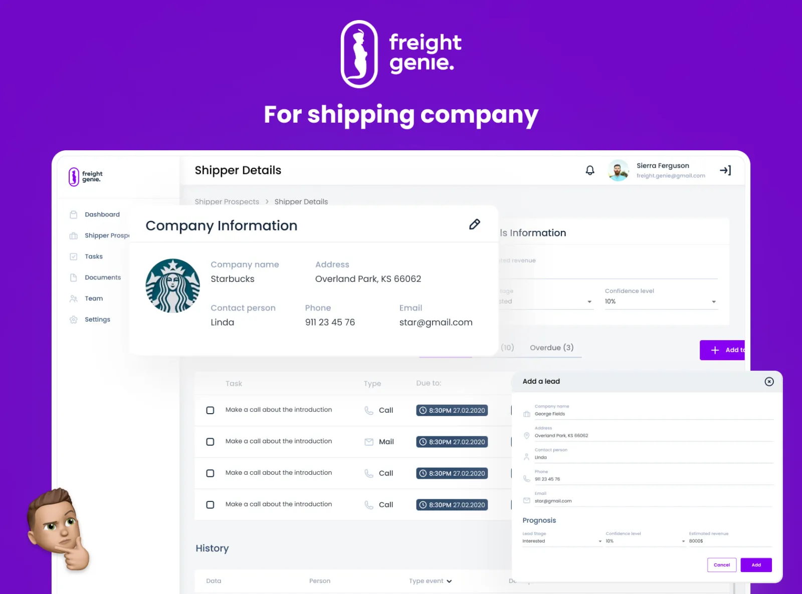

Freight Genie — a sales CRM for freight companies.Freight Genie — CRM для продажів у вантажоперевезеннях.
An MVP of a multi-role SaaS CRM where freight sales teams move shippers from a first call to a recurring customer. Three user roles, a lead pipeline, tasks, documents and permissions — designed solo as a fixed-price Upwork project that earned a five-star review.MVP багаторольової SaaS CRM, де відділи продажів вантажних компаній ведуть вантажовідправника від першого дзвінка до постійного клієнта. Три ролі користувачів, воронка (pipeline) лідів, задачі, документи й права доступу — я спроєктував усе сам у межах Upwork-проєкту з фіксованою ціною, який отримав п’ятизірковий відгук.

The business problem: a sales process that lived in people’s heads.Бізнес-проблема: процес продажів, який жив у головах людей.
The client was building a product for freight companies. Their sales people win shippers through a long chain of calls, quotes and first shipments. Without a system, nobody could see which leads were moving and which had gone quiet.Клієнт створював продукт для вантажних компаній. Їхні продавці здобувають вантажовідправників через довгий ланцюжок дзвінків, комерційних пропозицій і перших відправлень. Без системи ніхто не бачив, які ліди рухаються, а які завмерли.
The client came with a written specification for an MVP and a fixed budget. My job was to turn that specification into a complete, buildable design — without the scope growing along the way.Клієнт прийшов із письмовою специфікацією MVP і фіксованим бюджетом. Моє завдання — перетворити цю специфікацію на повний дизайн, готовий до розробки, і не дати обсягу розростися дорогою.
Three roles, three views of the same data.Три ролі — три погляди на ті самі дані.
- AdminAdminThe product’s own staff: manages customer companies and can see their dashboards.Власна команда продукту: керує компаніями-клієнтами й бачить їхні дашборди.
- Customer OwnerCustomer OwnerRuns a freight company’s account: leads, company settings, sales users and analytics.Веде акаунт вантажної компанії: ліди, налаштування компанії, продавців та аналітику.
- Customer SalesCustomer SalesWorks the leads assigned to them, day by day.Щодня працює з призначеними йому лідами.
I started from this permission map and not from screens. For every role I wrote down what they must see, what they may change and where they enter the product. The screens followed from that.Я почав із цієї карти прав доступу, а не з екранів. Для кожної ролі я записав, що вона має бачити, що може змінювати і де входить у продукт. Екрани випливли з цього.
How I worked inside a fixed price.Як я працював у межах фіксованої ціни.
- Specification to flowsВід специфікації до флоуI turned the client’s document into a mind map of flows and confirmed it with the client before opening Figma.Я перетворив документ клієнта на ментальну карту флоу й погодив її з клієнтом, перш ніж відкрити Figma.
- A shared boardСпільна дошкаEvery screen was a card on a board the client could see, with a clear done state. Nothing moved forward on assumptions.Кожен екран був карткою на дошці, яку бачив клієнт, із чітким станом «готово». Нічого не рухалося далі на припущеннях.
- States, not only screensСтани, а не лише екраниEmpty, first-use and error states were designed together with the main flow, so developers did not have to invent them.Порожній стан, стан першого запуску та стан помилки я проєктував разом з основним флоу, щоб розробникам не довелося їх вигадувати.
What I designed.Що я спроєктував.
- Pipeline dashboardДашборд воронкиLeads counted by stage — from first contact to recurring customer or closed-lost — so an owner sees the health of sales at a glance.Ліди за етапами — від першого контакту до постійного клієнта або closed-lost, — щоб власник одним поглядом бачив стан продажів.
- Lead pageСторінка лідаOne place for a shipper’s details, the history of contact and notes.Одне місце для даних вантажовідправника, історії контактів і нотаток.
- Lead pool and assignmentПул лідів і призначенняA shared pool of leads and a simple way to assign a lead to a sales person.Спільний пул лідів і простий спосіб призначити лід продавцю.
- TasksЗадачіA task creation dialog and a list of all tasks sorted by date.Діалог створення задачі й список усіх задач, відсортованих за датою.
- Deals and documentsУгоди й документиDeal screens, and documents organised in folders.Екрани угод і документи, упорядковані в папках.
- Roles and permissionsРолі й права доступуA settings screen for roles, adding employees, and sign-in and sign-up flows.Екран налаштувань ролей, додавання працівників, а також флоу входу й реєстрації.
Outcome.Результат.
The client closed the contract with a five-star review — my first on the platform. The full scope was delivered within the agreed price.Клієнт закрив контракт із п’ятизірковим відгуком — моїм першим на платформі. Повний обсяг я виконав у межах погодженої ціни.
What I carry into multi-role products today.Що я переношу в багаторольові продукти сьогодні.
- Permissions firstСпершу права доступуIn a multi-role product, the permission map is the real information architecture. Draw it before any screen.У багаторольовому продукті карта прав доступу і є справжньою інформаційною архітектурою. Намалюй її до будь-якого екрана.
- A pipeline is a state machineВоронка — це скінченний автоматEvery screen in a CRM is a place where a status changes. Designing the statuses first makes the screens obvious.Кожен екран CRM — це місце, де змінюється статус. Якщо спершу спроєктувати статуси, екрани стають очевидними.
- Fixed price needs a visible scopeФіксованій ціні потрібен видимий обсягA shared board with a done state protects both sides better than any contract clause.Спільна дошка зі станом «готово» захищає обидві сторони краще за будь-який пункт контракту.
If you liked this, also see…
Found this through Upwork?
Then you already know where to reach me. Send the brief through your Upwork job post or an invite — I usually reply within a working day.